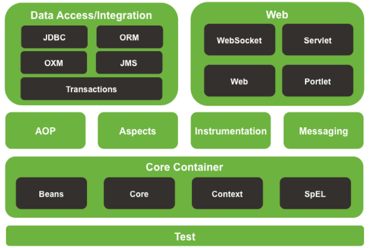
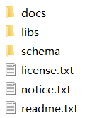
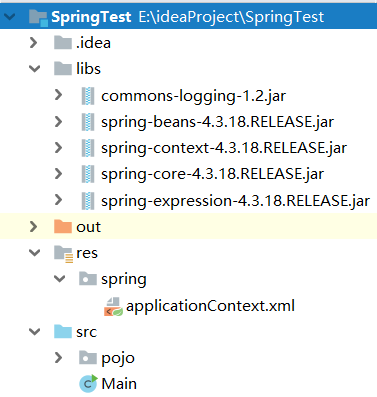
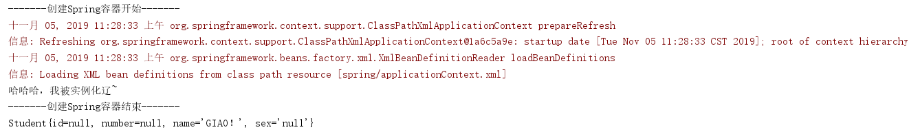

Spring是一个轻量级的Java开发框架， 目的是为了解决企业级应用开发的业务逻辑层和其他各层的耦合问题。
Spring的体系结构图如下：

此模支持使用 JUnit或TestNG 对Spring组件进行单元测试和集成测试。
下载Spring Framework解压后，得到如下图所示的目录结构：

其中，docs目录是Spring的API文档和开发规范；libs是Spring应用所需要的JAR包和源代码；schema是Spring应用所需要的schema文件，这些schema文件定义了Spring相关配置文件的约束。其中， libs下有三类JAR文件：以RELEASE.jar结尾的是开发时所需要的JAR包；以RELEASE-source.jar结尾的时源文件的压缩包；以RELEASE-javadoc.jar结尾的是API文档的压缩包。
Notice： Spring框架依赖于Apache Commons Logging组件，需要配合commons-logging的JAR包才能使用。
项目导入Spring基础包和commons-logging包、创建POJO、创建Spring配置文件后的结构图如下：

Student的代码如下：
public class Student {
private Integer id,number;
private String name,sex;
public Student() {
System.out.println("哈哈哈，我被实例化辽~");
}
public Integer getId() {
return id;
}
public void setId(Integer id) {
this.id = id;
}
public Integer getNumber() {
return number;
}
public void setNumber(Integer number) {
this.number = number;
}
public String getName() {
return name;
}
public void setName(String name) {
this.name = name;
}
public String getSex() {
return sex;
}
public void setSex(String sex) {
this.sex = sex;
}
@Override
public String toString() {
return "Student{" +
"id=" + id +
", number=" + number +
", name='" + name + '\'' +
", sex='" + sex + '\'' +
'}';
}
}applicationContext.xml的内容如下：
<?xml version="1.0" encoding="UTF-8"?>
<beans xmlns="http://www.springframework.org/schema/beans"
xmlns:xsi="http://www.w3.org/2001/XMLSchema-instance"
xsi:schemaLocation="http://www.springframework.org/schema/beans http://www.springframework.org/schema/beans/spring-beans.xsd">
<!--将Student交给Spring管理-->
<bean class="pojo.Student" id="student" />
</beans>Main类中写了一个测试方法，如下：
public static void main(String[] args) {
System.out.println("-------创建Spring容器开始-------");
ClassPathXmlApplicationContext applicationContext = new ClassPathXmlApplicationContext("spring/applicationContext.xml");
System.out.println("-------创建Spring容器结束-------");
Student student0=(Student)applicationContext.getBean("student");
Student student1=(Student)applicationContext.getBean("student");
student0.setName("GIAO！");
System.out.println(student1);
}输出如下：

可以看到，当创建Spring容器的时候，Spring会自动实例化配置了的bean，并且此时利用容器得到的bean都是同一个实例（student0调用setName()后影响到了student1的name，从而得出student0和student1是同一个对象）。